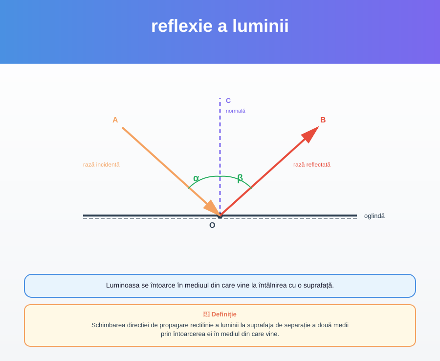
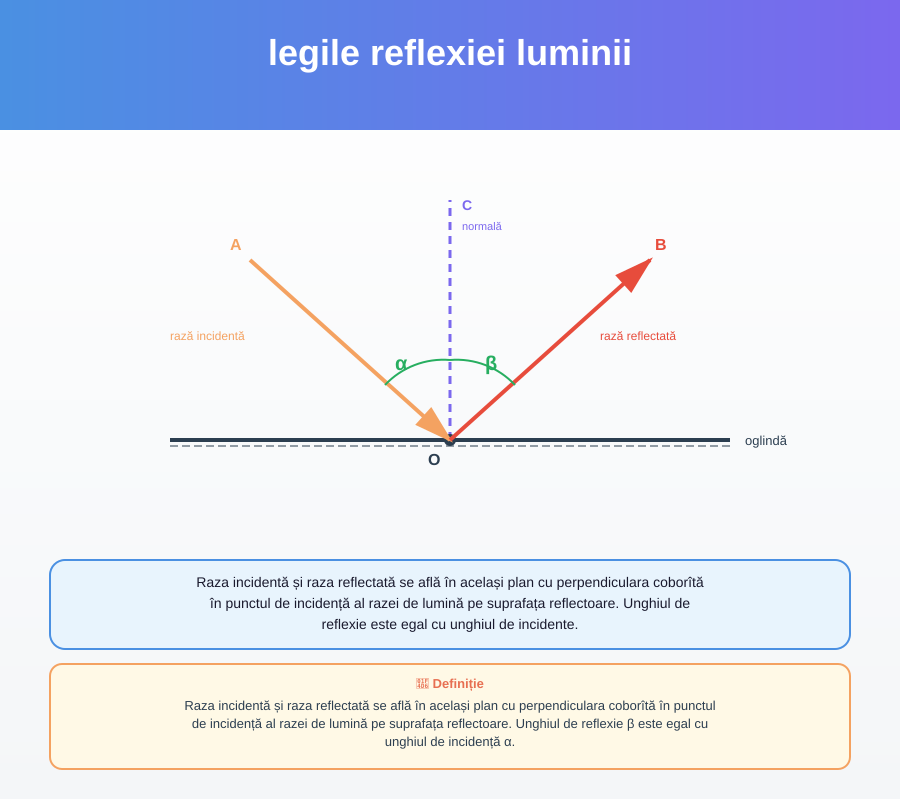

Schimbarea direcției de propagare rectilinie a luminii la suprafața de separație a două medii prin întoarcerea ei în mediul din care vine.
Luminoasa se întoarce în mediuul din care vine la întâlnirea cu o suprafață.
p. 8Suprafața plană, netedă și lucioasă care reflectă bine lumina.
O oglindă plană este o suprafață netedă și lucioasă care reflectă bine lumina.
p. 8
Raza incidentă și raza reflectată se află în același plan cu perpendiculara coborîtă în punctul de incidență al razei de lumină pe suprafața reflectoare. Unghiul de reflexie β este egal cu unghiul de incidență α.
Raza incidentă și raza reflectată se află în același plan cu perpendiculara coborîtă în punctul de incidență al razei de lumină pe suprafața reflectoare. Unghiul de reflexie este egal cu unghiul de incidente.
p. 8Imaginea obținută la intersecția prelungirilor raze- S lor reflectate se numește imagine virtuală.
Imaginea virtuală este reprezentată de traseul imaginii obținut la intersecția prelungirilor raze- S lor reflectate.
p. 10